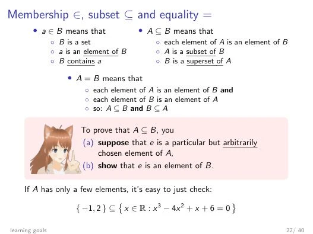
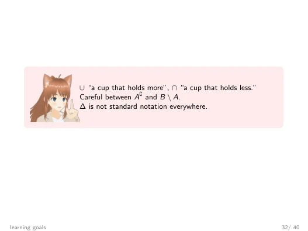
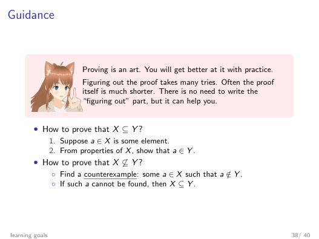

BM20A9200 数学A · 第 01 / 15 讲
第 1 讲 · 集合、属于关系与集合运算
Sets: Membership, Subsets and Basic Operations
所属章节：第 1 章 集合、关系与逻辑
资料来源 · 2 项 / 已附 0 项
01-lesson.pdf未附原文件Lecture1_Sets, relations and graphs.pdf未附原文件
未附文件仅列原始名称；版本与核对日期由维护者登记。
本节定位
BM20A9200 的第一讲同时承担两件事：交代课程规则，并建立整门课的“语言”——集合。后续的函数、关系、逻辑、基数、组合计数，全部是用集合写的；如果 ∈ 与 ⊆ 分不清，后面每一讲都会出错。
从课程结构看，本讲是 Sets 主题的第 1 部分（学习目标 1.1–1.3）。第 2 讲继续讲集合族与笛卡尔积，第 3 讲把集合语言升级为逻辑与关系。考试第 1 题几乎固定是集合运算与 Venn 图公式，属于“送分题”，但也是最容易因为符号写错而丢分的地方。
学完本节你应当能够：
- 用列举法（roster notation）与描述法（set builder notation）写出同一个集合，并判断写法是否正确
- 准确判断 x ∈ A、A ⊆ B、A = B 三类断言的真假，并说明理由
- 计算 ∩、∪、∖、∆ 与补集 ∁ 的结果，包括用全集 U 与骰子这类具体例子
- 按“设 x ∈ A 为任意元素 → 推出 x ∈ B”的框架写出 A ⊆ B 的证明
- 处理空集 ∅ 参与的逻辑：∅ ⊆ Y 恒真、x ∈ ∅ 恒假、X ⊆ ∅ 仅当 X = ∅
- 用 Venn 图的阴影区域反推出集合运算公式
1.1 课程规则中与考试直接相关的部分
第一讲的前半段是实务信息（practical matters），其中只有几项会影响你的得分方式。注册与习题小组在 Moodle 上完成；不在芬兰的学生可以参加第 9 组（线上组）。课程工作量合计约 162 小时，折合 6 学分：讲课 42 小时、习题课 28 小时、自学 74 小时、备考 15 小时、考试 3 小时。
评分由两部分组成：考试 0–40 分，作业 0–112 分（出勤 0–1 分、上台讲解 0–1 分、标记完成的题目 0–6 分）。作业分可以换成额外的考试分，换算如下：
| 作业分 exercise points | 额外考试分 extra exam points |
|---|---|
| 少于 10 | 0 分 |
| 10–20 | 1 分 |
| 21–30 | 2 分 |
| 31–41 | 3 分 |
| 42–51 | 4 分 |
| 52–62 | 5 分 |
| 63–72 | 6 分 |
| 73–83 | 7 分 |
| 84 及以上 | 8 分 |
最终成绩按“考试分 + 额外分”的总分换算：低于 20 分为 0，20–23 分为 1，24–27 分为 2，28–32 分为 3，33–36 分为 4，37 分及以上为 5。考试允许带一张 A4 大小的“小抄”（cheat sheet，正反两面、打印或手写都行，考后需交回）。
课程列出的学习目标有三条：理解集合论、函数、逻辑与矩阵的基本概念；能在合适的情境中独立完成简单计算并解简单方程；能识别与应用这些概念相关的问题。课程的定位是“面向软件工程的离散数学基础”——重点不是算得快，而是能精确地谈论数学对象（how to talk about mathematical objects precisely）。
1.2 集合的直观定义与两种写法
集合（set）就是一些对象的汇集（collection of objects），这些对象称为它的元素（elements）。关键点是：集合只记得“谁属于我”，不记得顺序，也不记得重复次数。
第一种写法是列举法（roster notation）：把元素一个一个列在花括号里，例如 A = {π, −5, 22/7, 0, 1, 2, 3, …}。省略号表示“按显而易见的规律继续”，但它有歧义；若集合有限，考试里应写全。
第二种写法是描述法（set builder notation）：B = { x ∈ A : 0 ≤ x ≤ 3 }，读作“A 中那些满足 0 ≤ x ≤ 3 的元素所成的集合”。冒号后面的部分是筛选条件（predicate）。描述法必须写清“从哪里取元素”（上例的 x ∈ A），否则会引出悖论。
四个必须一眼认出的符号：∈ 表示“是……的元素”（being an element of）；∉ 表示“不是元素”；∋ 表示“包含（某个元素）”，A ∋ 1 与 1 ∈ A 等价；∌ 是它的否定。∈ 连接的是“元素—集合”，两侧类型不同，写反了就是语法错误。
1.3 集合相等的判据：元素决定集合
两个集合 X 与 Y 是同一个集合（written X = Y）当且仅当它们有相同的元素。用逻辑写出来：对任意对象 e，e ∈ X 当且仅当 e ∈ Y。这个“当且仅当”是双向的，因此证明集合相等必须做两个方向。
由此得到两条铁律：其一，元素顺序无关紧要，{1, 3, 2} = {3, 2, 1}；其二，重复书写不影响集合，{1, 1, 1, 2} = {1, 2}，因为对任意 e，检验“e 是否属于左边”与“e 是否属于右边”答案相同：1 与 2 属于两边，其他数都不属于。
反面例子同样重要：C = {4, 5, 6} 与 D = {5, 4} 不相等，因为 6 ∈ C 但 6 ∉ D。只要找到一个“在一边不在另一边”的元素，就能否定相等。
1.4 空集与“不是集合”的东西
如果对任意 x 都有 x ∉ S，则 S 是空集（empty set），记作 ∅ 或 { }。它的定义可以写成一句话：对一切 x，x ∉ ∅。空集唯一：任何两个空集都含相同的元素（都没有），故相等。
反过来，“对任意 x 都有 x ∈ S”的集合不存在。若允许“包含一切集合的集合”，就得到罗素悖论（Russell’s paradox）：设 R 为“所有不含自身的集合”之集合，那么 R ∈ R 与 R ∉ R 都推出矛盾。理发师悖论（barber paradox）是它的通俗版本：给所有不自己刮脸的人刮脸、且只给这些人刮脸的理发师，是否给自己刮脸？
公理化集合论（ZFC 公理）用九条公理规定“什么能称为集合”，其中最重要的是外延公理（两集合相等当且仅当元素相同）与幂集公理（任何集合的幂集存在）。对本课程只需记住三条可操作规则：可以用列举法写集合；可以用描述法从“已知集合”里筛元素；常见数集 N、Z、Q、R 是现成可用的。
1.5 常用数集与区间记号
自然数 N = {0, 1, 2, 3, 4, …}（本课程把 0 算作自然数，写 Z⁺ 时才是正整数）；整数 Z = {…, −3, −2, −1, 0, 1, 2, 3, …}；有理数 Q = { a/b : a, b ∈ Z, b ≠ 0 }；实数 R（严格定义需要数学分析课程，直观上是数轴上的全部点）；无理数 I = { x ∈ R : x ∉ Q }。
区间用 Bourbaki 记号（本课程使用）：]a, b[ = { x ∈ R : a < x < b }、[a, b[ = { x ∈ R : a ≤ x < b }、]a, b] = { x ∈ R : a < x ≤ b }、[a, b] = { x ∈ R : a ≤ x ≤ b }。方括号表示端点取到，反向的方括号表示端点不取。国际标准 ISO 改用圆括号表示“端点不取”，两种写法可以互换，但同一份答卷里不要混用。
常见的“是集合”的例子：数集 N、Z、R；实数区间，如 ]1, 2] = { x ∈ R : 1 < x ≤ 2 }；方程的解集，如 { x ∈ R : x² + 5x − 1 = 0 }；关系（第 2、3 讲）；函数图像上的点集。
常见的“不是集合”的例子：原始对象（primitive elements），如数字 2 或 π 本身；有序表（ordered list / tuple），例如 L = (1, 2, 1, 3, 4) 与 M = (4, 3, 1, 2, 1) 不等（顺序有关），而 N = (1, 2, 3, 4) 长度 4 与 L 的长度 5 不同，故也不等（重复有关）；以及我们根本不认为“装着东西”的对象。
1.6 属于 ∈、包含 ⊆ 与相等 = 的定义
这三者的区别是本讲最核心的知识点。a ∈ B 的意思是：B 是一个集合，a 是 B 的元素，B 含有 a。这里 a 可以是数字、字符串，甚至另一个集合。
A ⊆ B（A 是 B 的子集，A is a subset of B；B 是 A 的超集，B is a superset of A）的意思是：A 的每个元素都是 B 的元素。形式化写作 (∀x)(x ∈ A ⇒ x ∈ B)。注意 ⊆ 的两边都必须是集合。
A = B 的意思是：A 的每个元素都是 B 的元素，且 B 的每个元素都是 A 的元素，也就是 A ⊆ B 且 B ⊆ A。这条“双向包含”把相等问题化为两个包含问题。
证明 A ⊆ B 的固定套路只有两步：(a) 假设 e 是 A 的一个“任取但固定”的元素（a particular but arbitrarily chosen element）；(b) 证明 e 是 B 的元素。因为 e 没有用到任何特殊性质，结论对 A 的所有元素成立。若 A 只有少数几个元素，也可以逐一验证，例如 {−1, 2} ⊆ { x ∈ R : x³ − 4x² + x + 6 = 0 }，把 −1 与 2 代入都等于 0 即可。
1.7 三个关于集合定义的典型问题
问题一：求 { n ∈ N : |n − π| < 3 } 的元素。解不等式 −3 < n − π < 3，即 π − 3 < n < π + 3，也就是 0.14… < n < 6.14…；n 为自然数，故 n ∈ {1, 2, 3, 4, 5, 6}。这类题的关键是“先解不等式，再套数集限制”。
问题二：判断 A = { x ∈ [−2, ∞[ : 2x + 1 = √(x + 2) } 与 B = {−1, 1/4} 是否相等。两边平方得 4x² + 4x + 1 = x + 2，即 4x² + 3x − 1 = 0，解得 x = 1/4 或 x = −1。但左边 2x + 1 必须非负（它等于一个算术平方根），x = −1 时左边为 −1，不成立，是增根。所以 A = {1/4} ≠ B。
问题三：把自然语言翻译成集合公式。设 A = {学生}、B = {勤奋的人}、C = {聪明的人}，且“懒惰”是“勤奋”的反面。那么“懒惰且聪明的学生”就是 A ∩ B∁ ∩ C，因为懒惰等价于不勤奋，B∁ 正是懒惰者的集合。若只问“懒惰的学生”，写 A ∩ B∁ = A ∖ B。
1.8 ∈ 与 ⊆ 的辨析（含集合作为元素）
取 A = {1, 2}、B = {−1, {1, 2}}、C = {1, 2, {1, 2}}，逐个判断：−1 ∈ A 假；−1 ∈ B 真（B 里确有 −1 这个元素）；2 ∈ A 真；2 ∈ B 假（B 的元素是 −1 与 {1, 2}，没有 2）。
再看集合与集合：A ∈ A 假，因为 A 的元素是 1 和 2，都不是 A 本身；A ∈ B 真，因为 B 恰好把 A 当作一个元素；A ∈ C 真，同理。A ⊆ A 真（自反性）；A ⊆ B 假（1 ∈ A 但 1 ∉ B）；A ⊆ C 真（1、2 都在 C 里）。
还有两种写法根本不成句：A ∈ 2 与 A ⊆ −1。因为 2 与 −1 都是数字，不是集合，而 ∈ 与 ⊆ 的右侧必须是集合。这类“类型错误”出现在答卷里会直接扣分。
把这一节压缩成一句话：∈ 问“这个对象是不是袋子里的东西”，⊆ 问“这个袋子的所有东西是不是都在另一个袋子里”。一个集合可以同时是另一个集合的元素（如 A ∈ C），但这与 A ⊆ C 是两件不同的事。
1.9 Venn 图
Venn 图（Venn diagram）用于直观展示集合之间的关系。组成部分：矩形（必须有，代表全集 U，即所有可能元素）、圆（可选，每个圆代表一个集合，圆内的点就是该集合的元素）、颜色（可选，用来高亮某个集合）、标签（可选，给集合命名）。画图时矩形不能省，否则“补集”无从表示。
读图的规矩：把阴影区域翻译成公式时，先看它落在哪些圆内，再减去落在哪些圆内的部分。例如“A 中但不在 B 中”的区域是 A ∖ B，也等于 A ∩ B∁。多个圆时要小心“只在某一个圆内”与“至少在某个圆内”的区别。
1.10 五个基本运算
以下都用全集 U 与骰子（die rolls）的例子：A 表示“点数大于 3”即 {4, 5, 6}，B 表示“点数为偶数”即 {2, 4, 6}。
交集（intersection）：A ∩ B = { x ∈ U : x ∈ A 且 x ∈ B }，即同时属于两者的元素。骰子例：A ∩ B = {4, 6}，语言描述是“大于 3 且为偶数”。
并集（union）：A ∪ B = { x ∈ U : x ∈ A 或 x ∈ B }。骰子例：A ∪ B = {2, 4, 5, 6}。
对称差（symmetric difference）：A ∆ B = { x ∈ U : (x ∈ A 或 x ∈ B) 且 x ∉ A ∩ B }，即“属于其一但不同时属于两者”。骰子例：A ∆ B = {2, 5}。它是排他或（exclusive or），就像食堂阿姨问“要鸡肉还是蔬菜”。
补集（complement）：A∁ = { x ∈ U : x ∉ A }。骰子例：A∁ = {1, 2, 3}，语言上是“不大于 3”，而不是“小于 3”。
差集（set difference）：A ∖ B = A − B = { x ∈ U : x ∈ A 且 x ∉ B }。骰子例：A ∖ B = {5}，即“大于 3 但不是偶数”。
三句记忆口诀与警告：∪ 像“装得更多的杯子”，∩ 像“装得更少的杯子”；A∁ 与 B ∖ A 极易混淆——前者相对全集，后者相对 B；∆ 并非所有教材都用的标准记号，答题时若担心歧义可写成 (A ∖ B) ∪ (B ∖ A)。
1.11 集合运算的真题
2022 年第一次考试第 1(a) 题（源文件 Ex6）：设 U = {0,1,2,3,4,5,6,7,8,9}、E = {0,2,4,6,8}、F = {0,1,2,3,4}，计算 E − F、F ∩ E、E∁ 与 { x ∈ U : x ∉ E 且 x ∈ F }。
逐个算：E − F = {6, 8}（E 中不在 F 里的）；F ∩ E = {0, 2, 4}；E∁ = {1, 3, 5, 7, 9}；最后一个集合是“在 F 里但不在 E 里”，即 F ∖ E = {1, 3}。注意第四个式子的文字顺序是“不在 E 且 在 F”，写公式时不要机械地按书写顺序抄成 E ∖ F。
2023 年第二次考试第 1(b) 题（源文件 Ex7）给出一张 Venn 图，要求用集合运算、括号与 X、A、B、C 写出阴影区域的公式，并解释为什么该公式对应这块区域。解法是“分层描述”：先用“且在”定位最小块，再用“或”合并，最后用补集扣掉多余部分，并逐条用定义检验：x 落在区域内当且仅当公式为真。
1.12 如何证明集合恒等式
课件把证明比作拼图游戏：手上有几块可以互相咬合的碎片，目标是拼成给定的那一块。数学证明要咬合的三样东西是：所用对象与符号的定义、逻辑、以及此前已证明的结果与公式。证明分两个阶段：先“想清楚怎么证”（figuring out），再把证明清楚地写下来；第一阶段可以很长，但不必写进答卷。
以 A ∩ B ⊆ A ∪ B 为例演示“想”的过程：要证的是 ⊆ 命题，其定义是“需要检验 A ∩ B 的元素是否都属于 A ∪ B”。但我们不知道 A ∩ B 具体有哪些元素，只能用它的性质：由交集定义，x ∈ A ∩ B 意味着 x ∈ A 且 x ∈ B。要得到 x ∈ A ∪ B，由并集定义只需“x ∈ A 或 x ∈ B”成立；而“且”能推出“或”，于是成立。因为 x 是任取的元素，所以结论对全部元素成立。
正式写出来：设 x ∈ A ∩ B 为任意元素，则 x ∈ A 且 x ∈ B，于是“x ∈ A 或 x ∈ B”为真，故 x ∈ A ∪ B。由于 x 任意，得 A ∩ B ⊆ A ∪ B。证明以 Proof 开头，以 □（或 ■、Q.E.D.）结尾。
同一框架可以处理作业里的几条：A ∪ (B ∪ C) = (A ∪ B) ∪ C（并集结合律，两个方向各做一次 ⊆）；A ∆ B = (A ∖ B) ∪ (B ∖ A)（把 ∆ 的定义展开，两边互相包含）；A ∪ A∁ = U 与 A ∩ A∁ = ∅（对任意 x，“x ∈ A 或 x ∉ A”必有一个成立）；以及德摩根律 (A ∩ B)∁ = A∁ ∪ B∁（否定“且”得“或”，正是逻辑里的 ¬(P ∧ Q) ⇔ ¬P ∨ ¬Q）。
1.13 空集参与的逻辑
与空集有关的推理最容易让人困惑，但规则只有三条：∅ ⊆ Y 恒真（对任何集合 Y）；x ∈ ∅ 恒假（对任何 x）；X ⊆ ∅ 仅当 X = ∅ 时为真。
为什么 ∅ ⊆ Y 恒真？直接证明：要证“∅ 的每个元素都在 Y 中”，但 ∅ 里没有任何元素需要检查，所以命题默认成立（vacuously true）。反证法看：若 ∅ ⊄ Y，则必须存在 x ∈ ∅ 而 x ∉ Y，但 ∅ 没有元素，矛盾，故只能 ∅ ⊆ Y。
由此还能推出两个常用结论：若 X ⊆ ∅，则 X 的每个元素都要在 ∅ 里，而 ∅ 没有元素，所以 X 不能有元素，即 X = ∅；反之显然。再如 ∅ ∩ A = ∅、∅ ∪ A = A、A ∖ ∅ = A、∅ ∖ A = ∅，都可以用“元素检验法”一行写完。
1.14 常见误解汇总
误解一：把 ∈ 与 ⊆ 当成同义词。纠正：1 ∈ {1, 2} 真，但 1 ⊆ {1, 2} 根本不合语法；反过来 {1} ⊆ {1, 2} 真，而 {1} ∈ {1, 2} 假。
误解二：认为集合的元素有顺序。纠正：{a, b} = {b, a}；有序对才有顺序，那是第 2 讲的内容。误解三：认为重复写元素会“变大”。纠正：集合相等只看“谁在里面”，不看次数。
误解四：把补集算成“差集”。纠正：A∁ = U ∖ A，参照物是全集；B ∖ A 参照物是 B。同一个 A，换一个全集，补集就变了——所以谈补集必须先明确全集。误解五：解方程两边平方后不检验。纠正：a = b ⇒ a² = b² 只是单向蕴含，反向不成立，会出现增根。
集合只记得谁属于它，不记得顺序与重复次数，所以 {a,b} 与 {b,a} 相同，{a,a} 与 {a} 相同。列举法里的省略号有歧义，有限集在考试中应写全；描述法必须写清从哪里取元素，如 { x ∈ A : 0 ≤ x ≤ 3 }，否则会引出悖论。符号 ∈ 连接的是元素与集合，两侧类型不同，写反就是语法错误；A ∋ 1 与 1 ∈ A 等价。判两集相等只看元素：X=Y 当且仅当互为子集，与书写顺序无关。
原版图页（源 PDF 插图页）







| English | 中文 | 说明 / 例句 |
|---|---|---|
| set | 集合 | A collection of objects; only membership matters. |
| element | 元素 | An object that belongs to a set: 1 ∈ {1, 2}. |
| roster notation | 列举法 | List the elements: A = {1, 2, 3}. |
| set builder notation | 描述法 | A = { x ∈ S : P(x) }, the elements of S that satisfy P. |
| subset | 子集 | A ⊆ B means every element of A is an element of B. |
| superset | 超集 | If A ⊆ B, then B is a superset of A. |
| set equality | 集合相等 | A = B iff (x ∈ A ⇔ x ∈ B), i.e. A ⊆ B and B ⊆ A. |
| empty set | 空集 | ∅ = { }; x ∉ ∅ for all x; ∅ ⊆ Y is always true. |
| universal set | 全集 | The set U of all elements under discussion. |
| intersection | 交集 | A ∩ B = { x ∈ U : x ∈ A and x ∈ B }. |
| union | 并集 | A ∪ B = { x ∈ U : x ∈ A or x ∈ B }; the “or” is inclusive. |
| complement | 补集 | A∁ = { x ∈ U : x ∉ A }. |
| set difference | 差集 | A ∖ B = { x ∈ U : x ∈ A and x ∉ B }; also written A − B. |
| symmetric difference | 对称差 | A ∆ B = (A ∖ B) ∪ (B ∖ A); the exclusive or. |
| Venn diagram | 维恩图 | Rectangle = universe, circles = sets, colours = highlights. |
| counterexample | 反例 | One element showing a claimed ⊆ or equality fails. |
先解绝对值不等式：−2 < n − 5 < 2，三边加 5 得 3 < n < 7。
n 必须是自然数，故 n ∈ {4, 5, 6}。检验：n = 4 时 |−1| = 1 < 2 成立；n = 6 时 |1| = 1 < 2 成立；n = 3 时 |−2| = 2 不满足严格小于，n = 7 同理被排除。
答案：{4, 5, 6}。通用做法是“先解不等式得区间，再与元素所在数集取交集”。
第一步，确定允许的 x：根号要求 x + 2 ≥ 0，即 x ≥ −2；同时左边 2x + 1 是算术平方根的值，必须 ≥ 0，故 x ≥ −1/2。可行范围是 [−1/2, ∞[。
第二步，两边平方（会引入增根，必须回代）：(2x + 1)² = x + 2，即 4x² + 4x + 1 = x + 2，整理得 4x² + 3x − 1 = 0。
第三步，判别式 9 + 16 = 25，根为 x = (−3 ± 5)/8，即 x = 1/4 或 x = −1。
第四步，用可行范围筛：−1 < −1/2 落在范围外，舍去；1/4 保留。所以 A = {1/4}。
结论：A ≠ B。−1 ∈ B 但 −1 ∉ A，指出这样一个元素即可否定相等。
E − F：属于 E 但不属于 F 的元素。E 的 0、2、4 都在 F 中，故只剩 6、8，即 {6, 8}。
F ∩ E：交集与顺序无关，{0, 2, 4}。
E∁：U 中去掉 E 的元素，即奇数 {1, 3, 5, 7, 9}。
最后一个：条件“x ∉ E 且 x ∈ F”对应 F ∖ E，F 中排除 0、2、4 后剩 {1, 3}。
四个答案合起来就是这类题的标准四连问：差集、交集、补集、以及一个用描述法伪装的运算。先翻译成符号再计算，可避免“按文字顺序硬抄”的错误。
想的过程：要证 ⊆，需任取 x ∈ A ∩ B，证 x ∈ A ∪ B。x ∈ A ∩ B 由定义给出两个信息：x ∈ A 且 x ∈ B。要证 x ∈ A ∪ B，只需“x ∈ A 或 x ∈ B”成立。由“且”推“或”合法（P ∧ Q ⇒ P ∨ Q），故成立。
Proof. 设 x ∈ A ∩ B 为任意元素。由交集定义，x ∈ A 且 x ∈ B。既然 x ∈ A 为真，命题“x ∈ A 或 x ∈ B”为真。由并集定义，x ∈ A ∪ B。由于 x 是 A ∩ B 中任意取定的元素，故 A ∩ B ⊆ A ∪ B。□
检验：取 A = {1}、B = {2}，则 A ∩ B = ∅、A ∪ B = {1, 2}，∅ ⊆ {1, 2} 成立；取 A = B = {1}，两边都是 {1}，包含关系成立（且相等）。
要证相等，做两个包含。
(⊆) 设 x ∈ (A ∩ B)∁，即 x ∉ A ∩ B。若同时 x ∈ A 且 x ∈ B，则 x ∈ A ∩ B，矛盾。所以“x ∈ A 且 x ∈ B”为假，由德摩根逻辑律等价于“x ∉ A 或 x ∉ B”，即 x ∈ A∁ 或 x ∈ B∁，故 x ∈ A∁ ∪ B∁。
(⊇) 设 x ∈ A∁ ∪ B∁，即 x ∉ A 或 x ∉ B。无论哪种情况，都不能同时有 x ∈ A 与 x ∈ B，所以 x ∉ A ∩ B，即 x ∈ (A ∩ B)∁。
两个方向都成立，故相等。□ 整个证明只用了两件事：交集与补集的定义，以及 ¬(P ∧ Q) ⇔ ¬P ∨ ¬Q。这也说明集合运算与逻辑运算是同一套结构的两种写法。
- 设 U = {1, 2, …, 12}、A = {2, 4, 6, 8, 10, 12}、B = {3, 6, 9, 12}。求 A ∩ B、A ∪ B、A ∖ B、B ∖ A、A ∆ B 与 (A ∪ B)∁。
- 用描述法写出集合 { x ∈ Z : −3 ≤ x < 4 且 x 为偶数 } 的全部元素。
- 判断真假并说明理由：(a) ∅ ∈ {∅}；(b) ∅ ⊆ {∅}；(c) {∅} ⊆ ∅；(d) {1, 2} ∈ {1, 2, {1, 2}}。
- 证明 A ∖ B = A ∩ B∁。
- 证明：若 A ⊆ B 且 B ⊆ C，则 A ⊆ C。
- 给出一个反例说明 A ∪ (B ∩ C) ≠ (A ∪ B) ∩ C 一般不成立。
参考答案与思路
1. A ∩ B = {6, 12}；A ∪ B = {2, 3, 4, 6, 8, 9, 10, 12}；A ∖ B = {2, 4, 8, 10}；B ∖ A = {3, 9}；A ∆ B = {2, 3, 4, 8, 9, 10}；U ∖ (A ∪ B) = {1, 5, 7, 11}。
2. 先解 −3 ≤ x < 4 得 x ∈ {−3, −2, −1, 0, 1, 2, 3}，取其中偶数：{−2, 0, 2}。0 是偶数、−2 也是偶数，这是最常见的漏项点。
3. (a) 真：{∅} 恰好以 ∅ 为元素。(b) 真：空集是任何集合的子集。(c) 假：∅ 没有元素，不能包含 {∅}（且 {∅} ≠ ∅）。(d) 真：{1, 2, {1, 2}} 把 {1, 2} 列为元素。
4. 两边互含。设 x ∈ A ∖ B，则 x ∈ A 且 x ∉ B，即 x ∈ A 且 x ∈ B∁，故 x ∈ A ∩ B∁；反向同理。关键是熟练使用 x ∉ B ⇔ x ∈ B∁。
5. 设 x ∈ A 为任意元素。由 A ⊆ B 得 x ∈ B；由 B ⊆ C 得 x ∈ C。故 x ∈ C。因 x 任意，A ⊆ C。这是传递性的模板证明，只用了两次定义。
6. 取 A = {1}、B = {1}、C = {2}。左边 A ∪ (B ∩ C) = {1} ∪ ∅ = {1}；右边 (A ∪ B) ∩ C = {1} ∩ {2} = ∅。两者不等。说明并集不能对交集“分配”，只有交集对并集可以分配。
考点分层
方法清单
判断 ∈ 与 ⊆ 与 = 的三问
- 左边是元素、右边是集合吗？是则只能谈 ∈，不能谈 ⊆
- 如果是 ⊆，检查两边是否都是集合（数字、元组都不能做子集）
- 如果是 =，准备两个方向：A ⊆ B 与 B ⊆ A
- 遇到 {∅} 或 {1, {1, 2}} 这类嵌套，先把元素逐个列出再判断
- 找到反例立即否定；找不到反例才尝试证明
计算集合运算的顺序
- 写出全集 U 与各集合的元素（去重、排序）
- 先算括号里的 ∩ 或 ∖，再算 ∪、∆
- 补集最后算，参照物必须是已明确的全集
- 遇到描述法先用不等式或条件筛元素，再套运算
- 用元素个数粗检：|A ∪ B| = |A| + |B| − |A ∩ B|
写 ⊆ 证明的模板
- 写下 Proof 与“设 x ∈ X 为任意元素”
- 把 x ∈ X 按定义展开成具体条件（且、或、不等式）
- 用逻辑或代数推出 x ∈ Y 所需的条件
- 按 Y 的定义把条件翻译回 x ∈ Y
- 声明 x 任意，写出 X ⊆ Y，以 □ 收尾
| 源文件 | 页码 | 覆盖的知识点 |
|---|---|---|
| 01-lesson.pdf | p4–p13 | 课程规则、评分与作业换分表、考试安排、AI 使用规定、学习方法与后续课程 |
| 01-lesson.pdf | p14–p20 | 学习数学的五个面向、第 1 周学习目标、集合的直观定义、列举法与描述法、∈ ∉ ∋ |
| 01-lesson.pdf | p21–p25 | 集合相等的判据、顺序与重复无关、空集、ZFC 公理与罗素悖论、常用数集与区间记号 |
| 01-lesson.pdf | p26–p29 | 集合与非集合的例子、∈ ⊆ = 的定义、⊆ 证明的两步法、Ex1–Ex5（含增根问题） |
| 01-lesson.pdf | p31–p39 | Venn 图要素、∩ ∪ ∆ ∁ ∖ 的定义与骰子例子、口诀与警告、Ex6–Ex7 真题 |
| 01-lesson.pdf | p41–p47 | 集合恒等式的证明方法、A ∩ B ⊆ A ∪ B 的完整范例、空集逻辑、⊆ 与 ⊄ 的证明指南、Ex9–Ex12 |
| Lecture1_Sets, relations and graphs.pdf | 全篇 | 背景材料对同一主题的更详细叙述，用于补充定义与证明细节 |
| （跳过） | p8 | AI 使用规定的图示页，属行政信息，不构成数学考点 |
| （跳过） | p26、p32、p37、p43、p46 | 课堂活动页（举手、投票、小组讨论），内容已并入相应知识点 |
| （补充拓展） | — | 罗素悖论与理发师悖论的对照、von Neumann 序数说明、德摩根律的完整双向证明 |